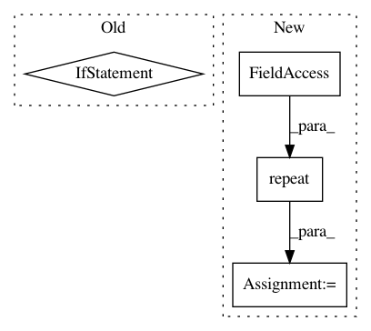

abfd430f17c08d1b8829a7e58e3d873bda95c39c,examples/mnist/tf/mnist_dist_dataset.py,,map_fun,#,17
Before Change
file_pattern = os.path.join(image_dir, "part-*")
files = tf.gfile.Glob(file_pattern)
parse_fn = _parse_tfr if args.format == "tfr" else _parse_csv
ds = tf.data.TextLineDataset(files).map(parse_fn).batch(args.batch_size)
iterator = ds.make_initializable_iterator()
x, y_, y_val = iterator.get_next()
After Change
ds = tf.data.TFRecordDataset(files)
parse_fn = _parse_tfr
ds = ds.shard(num_workers, task_index).repeat(args.epochs).shuffle(args.shuffle_size)
ds = ds.map(parse_fn).batch(args.batch_size)
iterator = ds.make_initializable_iterator()
x, y_ = iterator.get_next()
In pattern: SUPERPATTERN
Frequency: 3
Non-data size: 4
Instances
Project Name: yahoo/TensorFlowOnSpark
Commit Name: abfd430f17c08d1b8829a7e58e3d873bda95c39c
Time: 2018-03-26
Author: leewyang@gmail.com
File Name: examples/mnist/tf/mnist_dist_dataset.py
Class Name:
Method Name: map_fun
Project Name: eriklindernoren/PyTorch-GAN
Commit Name: 9dfafadcea9f709132bce12341a32ff5e27ec33a
Time: 2018-04-24
Author: eriklindernoren@gmail.com
File Name: implementations/infogan/infogan.py
Class Name:
Method Name: sample_image
Project Name: cesium-ml/cesium
Commit Name: 9be64784de6d7d5ed1e85ca4bb380d40cf95b14a
Time: 2016-02-04
Author: brettnaul@gmail.com
File Name: mltsp/featurize_tools.py
Class Name:
Method Name: parse_ts_data